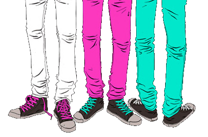
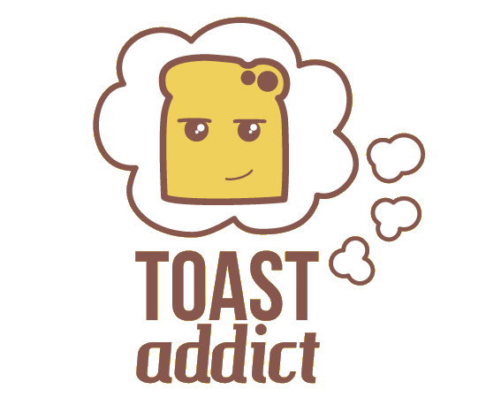

being a dev
what its like to be a dev
how best to work with devs
7 years professional coding
lots of languages
different types of companies
full stack developer
coder dojo + code club
blogging + open source
What is your work like?
pairing
define what "done" is before you start
standups
stories
define
prioritise
make
discuss
So what do you do, day to day?
make stuff
... but not very much of the time
its mostly talking!
planning
discussing
talking through problems
explaining what we made
teaching each other
anything we can help with!
How do you interact with non-technical teams?

we need help understanding:
- problems
- workflow bottlenecks
- ideas for improvements
- how things are really used
- what's important / urgent?
How does learning to code help me work with technical people?
its not magic